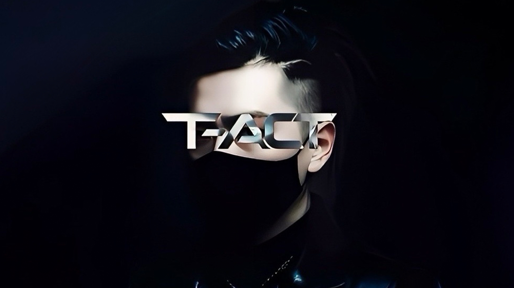

SWIPE UP TO DISCOVER

01 / INTRODUCTION ● RECORDING LIFE
BUILDER BY DAY. ARTIST BY NIGHT.
昼は建設。
夜は音に。
T-ACT
Chill / Hip-Hop / R&B
02 / IDENTITY
ONE LIFE.
TWO SIDES.
仕事も、音楽も。
現実の中で。
昼は建設に向き合い、夜は音楽をつくる。
別々に見えるふたつの時間は、
ひとつの日常でつながっている。
DAY / 建設築く。
↗NIGHT / 音楽残す。
日本を拠点に活動する
インディペンデントアーティスト、T-ACT。
03 / PHILOSOPHY
A RECORD OF MEMORIES
音楽は、
記憶の記録。
忘れてしまう景色。
言葉にできなかった感情。
その時にしかなかった温度。
薄れていく前に、音に残す。
04 / EXPRESSION
記憶は、
保存のたびに
変質する。
ならば、記録するのは
出来事ではない。
その時点の私が、
現実をどう誤読していたか。
ChillHip-HopR&B
音楽は、その痕跡である。
06 / BEYOND MUSIC
THOUGHTS TAKE SHAPE.
残したいものから、
表現を選ぶ。
音楽にする。言葉にする。
ときには、ゲームにする。
現実の中で生まれた思考を、
いちばん伝わる形で。
RUN↗
評価、偏見、流行、承認、数字、比較。
現実にある「構造」を、自分の操作で抜けていく。
07 / KEEP IN TOUCH